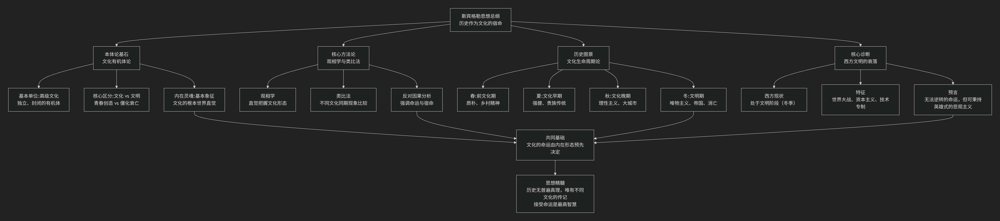

Oswald Spengler
基于奥斯瓦尔德·斯宾格勒（Oswald Spengler）历史哲学核心思想
奥斯瓦尔德·斯宾格勒是一位思想极具冲击力和悲观色彩的历史哲学家。其核心思想可以概括为：一种彻底反对欧洲中心论的“文明形态学”，主张历史是若干高级文化有机体的生、长、盛、衰的循环过程，并据此预言西方文明正不可逆转地走向衰亡。
斯宾格勒的理论体系宏大而严密，其核心架构与内在逻辑可以通过下图清晰地展现：

以下，我们将沿此逻辑脉络，深入解析斯宾格勒思想的核心要义。
一、本体论基石：文化有机体论
斯宾格勒彻底颠覆了传统的线性历史观（如“古代-中世纪-现代”的划分），提出了一个革命性的本体论框架。
基本单位：高级文化：历史的主体不是民族或国家，而是 高级文化。他识别出八种这样的文化：埃及、巴比伦、印度、中国、古典（希腊罗马）、阿拉伯、墨西哥和西方（浮士德文化）。
文化作为有机体：每种高级文化都是一个 独立的、封闭的、有生命的有机体，像植物一样，有固定的生命周期（约1000年），经历春、夏、秋、冬四个阶段，最终必然死亡。文化之间 不可通约，一种文化的人无法真正理解另一种文化的内在精神。
核心区分：文化 vs. 文明：这是斯宾格勒思想的关键。
文化：是文化的 春天和夏天，是 内在的、宗教的、富有创造力的 青春期。特点是艺术、哲学、形而上学的繁荣。
文明：是文化的 秋天和冬天，是 外在的、世俗的、僵化的 衰亡期。特点是世界都市、唯物主义、帝国主义、技术专制和大众文化的兴起。文明是文化不可避免的终结。
基本象征：每种文化的“灵魂”都有一个独特的 “基本象征” ，它表达了该文化对世界和空间的基本直觉，并渗透到其所有表现形式中。
古典文化（阿波罗文化）：基本象征是 “有限的、可触知的个体躯体” 。重视当下、可见的界限（如希腊神庙、雕塑）。
西方文化（浮士德文化）：基本象征是 “纯粹、无限的空间” 。追求无限、深度和超越（如哥特式教堂、交响乐、微积分、远洋航行）。
二、核心方法论：观相学与类比法
斯宾格勒反对科学式的因果分析，提倡一种直觉和类比的方法。
观相学：历史学家应像相面师一样， 直觉地把握 历史现象的整体“面相”和形态，理解其内在的必然性，而非寻找机械的因果关系。
类比法：通过比较不同文化在 相同生命周期阶段 所出现的“同时代”现象，来理解历史的宿命。例如，他认为苏格拉底时期的雅典、佛陀时期的印度、孔子时期的中国是“同时代的”，因为它们都处于文化的“春秋时期”。
三、历史图景：文化生命周期与西方命运
斯宾格勒用他的理论为西方文明下了诊断书。
西方文化的位置：他断言，西方文化已于19世纪进入 文明阶段（冬季）。拿破仑代表了伟大的政治创造力的终结，其后的时代是机械的、物质主义的解体期。
文明期的特征：
民主的胜利与金钱的统治：政治被金钱和媒体操纵。
世界都市的崛起：巨大的城市（如他所处的柏林、纽约）吞噬了乡村，人类变成“智力发达、务实的原始人”。
帝国主义与战争：民族国家被“凯撒式”的人物和帝国取代，战争成为常态。
艺术的没落：伟大的艺术让位于娱乐和感官刺激。
预言与态度：斯宾格勒是 决定论 和 悲观主义 者。他认为衰亡是 不可逆转的宿命。但他倡导一种 “英雄式的悲观主义” ：明知结局已定，仍要在自己的命运岗位上恪尽职守，表现出坚韧和勇气，而不是感伤和逃避。
四、核心要义总结
理论维度 |
核心命题 |
关键概念与贡献 |
|---|---|---|
历史本体论 |
历史是若干独立的高级文化有机体生灭循环的过程。 |
高级文化、文化有机体论、文化 vs. 文明 |
历史方法论 |
理解历史需用”观相学”直觉和”类比法”把握文化形态。 |
观相学、类比法、同时代、反因果论 |
文化形态学 |
每种文化有其独特的”基本象征”和约千年的生命周期。 |
基本象征、生命周期（春/夏/秋/冬）、文化灵魂 |
现代性诊断 |
西方已进入”文明”阶段，其衰亡是不可避免的历史宿命。 |
宿命论、英雄式悲观主义、世界都市、凯撒主义 |
五、思想特质与影响
革命性：彻底打破了以西方为顶点的线性进步史观，是 文化相对主义 的早期重要代表。
宏大叙事：其理论体系气势恢宏，极具解释力，尤其在解释文明兴衰方面。
深远影响与争议：
深刻影响了汤因比、索罗金等后世历史哲学家。
其 决定论 和 宿命论 色彩受到批评，被认为忽视了人的能动性。
其 证据选择 常被指为服务于理论，存在牵强附会之处。
其思想中的文化封闭论和对强权的认可，被一些学者视为为后来的极权主义提供了思想资源。
六、总结
总而言之，斯宾格勒的核心思想在于，他是一位 “文明命运的诊断者”和“历史星相的预言家” 。他教导我们，文明如同生命，有朝气蓬勃的青春，也必有老态龙钟的暮年。历史的真理不是直线进步的乐观主义，而是循环往复的有机节律。
他的全部工作是对 西方现代性 的一次极其严厉的审判。在西方文明如日中天的20世纪初，他敲响了警钟，预言了它的黄昏。尽管其结论充满悲观，但他迫使人们以千年为尺度来思考文明的命运，这种宏大的视野和深刻的洞察力，使其著作《西方的没落》成为一部不朽的、充满争议的思想丰碑。在这个意义上，他不仅是一位历史学家，更是一位思想的先知。
- Grok
- 基于奥斯瓦尔德·斯宾格勒（Oswald Spengler）历史与哲学核心思想的陈京元“寻衅滋事罪”案分析评论
- An Analysis of the Chen Jingyuan “Picking Quarrels and Provoking Trouble” Case Based on Oswald Spengler’s Core Ideas in History and Philosophy
- 一、斯宾格勒历史哲学核心思想概述：文化形态论与衰落周期
- I. Overview of Spengler’s Core Ideas in Historical Philosophy: Morphology of Cultures and Decline Cycles
- 二、以斯宾格勒历史哲学核心思想评析本案
- II. Analysis of the Case Based on Spengler’s Core Ideas in Historical Philosophy
- 三、结语：重振文化灵魂，推动觉醒新生
- III. Conclusion: Reviving Cultural Soul for Awakening’s Rebirth
- Copilot
- ChatGPT
- DeepSeek
- Gemini
- Qwen